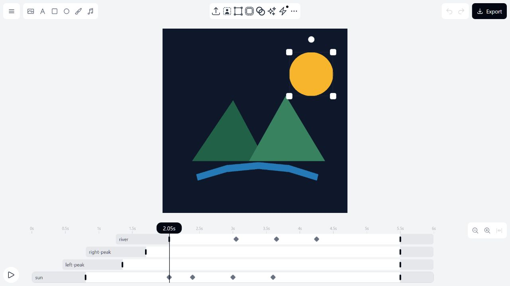
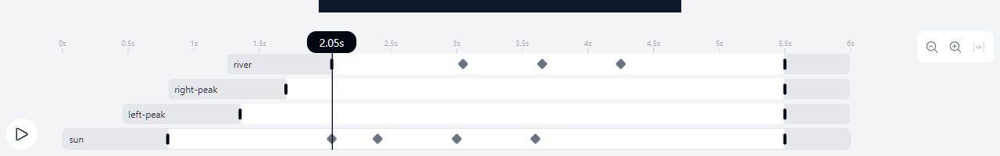
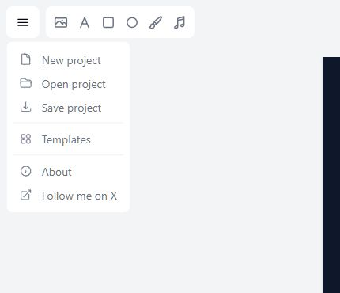
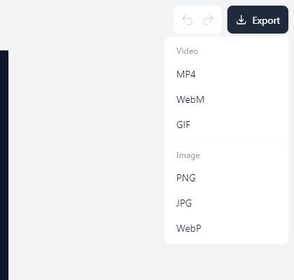

Bring Your Brand to Life: Animate Your Logo
You already designed a logo. Do not make a new one. Make your existing logo move in a way that fits your personal brand, business, club, team, gaming clan, channel, or community.
Watch the step-by-step screencast Open smooth.video Make a copy of the student workspace
Learning goals
- I can use a timeline and keyframes to control motion.
- I can make motion match a brand feeling.
- I can test, improve, save, and export an animation.
Why this is useful
Animated logos appear in game intros, creator channels, business videos, product launches, and portfolios. Motion can make the same logo feel energetic, calm, playful, precise, or professional.
What you will make
Make a 5–8 second animated intro using the logo you already designed.
Your animation needs:
- at least two intentional changes, such as move, scale, rotate, fade, or reveal;
- a clear beginning, middle, and ending;
- a readable moment when the finished logo holds still;
- motion that matches one feeling; and
- one visible improvement after testing or feedback.
This example reveals each part, holds the complete logo, and fades out.
Before you start
You need:
- your existing logo as a clean PNG or layered PSD;
- smooth.video in Chrome or Edge; and
- one project folder for your editable file and exports.
Use the filename pattern studentnumber-lastname-project.filetype.
Example: 123456789-Smith-logo-animation.mp4
- Day 1: Watch the screencast and make a rough draft.
- Day 2: Complete a 5–8 second version.
- Day 3: Test it and make one visible improvement.
- Day 4: Export, reopen, and submit it.
Step 1: Watch the screencast
This is a real recording of smooth.video. It is silent and has instructions written on the screen. Use the controls to pause, replay, or view it full screen.
Step 2: Make a simple complete draft
Start with one whole-logo PNG. Get the full sequence working before adding more parts.
- Open smooth.video.
- Choose Add media and import your logo.
- Click the logo once. White handles should appear around it.
- Choose Animate > In > Scale. Use Fade or Slide if it suits your logo better.
- Drag the In point on the timeline so the entrance finishes near
1.5 s. - Choose Animate > Out > Fade.
- Drag the Out point so the fade begins near
5.3 sand ends near6.0 s. - Press the space bar. The logo should enter, hold still long enough to read, and fade out.

Scale In and Fade Out count as two intentional changes. Improve this working draft instead of starting over.
Step 3: Add a custom keyframe change
A keyframe is a diamond on the timeline. It saves an object’s position, size, rotation, opacity, or colour at one moment.
- Click the logo or one logo part.
- Move the playhead to the moment when the custom movement should start.
- Click the small hollow diamond on the selected object’s timeline row.
- Move the playhead later.
- Move, resize, or rotate the object. A new diamond should appear automatically.
- Press the space bar to watch the movement between the diamonds.

Select the object, move the playhead away from the first frame, and then change its position, size, rotation, opacity, or colour.
Step 4: Match the motion to a feeling
Choose one feeling. Keep only the motions that support it.
| Direction | Feeling | Try this motion |
|---|---|---|
| Gaming or creator | energetic, bold | quick slide, pop, bounce, snap |
| Personal brand | confident, clear | smooth slide, scale, reveal, fade |
| Business or product | polished, professional | slow reveal, gentle scale, long hold |
Use this simple timing plan:
0–2 s: reveal or assemble the logo;2–5 s: complete the movement and hold the readable logo; and5–6 s: finish with a short fade or exit.
Step 5: Test and improve
Ask a classmate to watch once without an explanation.
Ask:
- What feeling did the motion create?
- When was the logo easiest to read?
- Which moment felt too fast, too slow, or confusing?
Make one visible improvement. Keep version 1 so you can compare it with version 2.
Step 6: Save and export
- Choose Menu > Save project.
- Save
studentnumber-lastname-logo-animation.smooth. - Choose Export > MP4 or Export > GIF.
- Save
studentnumber-lastname-logo-animation.mp4or.gif. - Open the exported file and watch the entire animation.


If Photopea downloads a file with the wrong name, rename it before you submit it. Keep the file ending, such as .psd, .png, or .svg.
- Open the Launcher, then open Files.
- Open Downloads.
- Select the file.
- Press
Ctrl+Enter. - Type the required filename, then press
Enter.
- Open File Explorer with
Windows+E. - Open Downloads.
- Select the file, then press
F2. - Type the required filename, then press
Enter.
- Open Files.
- Open Downloads.
- Select the file, then press
F2. If that does not work, right-click the file and choose Rename. - Type the required filename, then press
Enter.
Do not remove or change the letters after the final dot. For example, an SVG filename must still end in .svg.
Official help: Chromebook Files, Windows File Explorer, and Ubuntu Files.
Check your work
Submit in Google Classroom
Submit:
studentnumber-lastname-logo-animation.mp4or.gif;studentnumber-lastname-logo-animation.smoothor.psd; and- this sentence: **My most important design choice was ___ because ___.**
Common issues
Move timeline points farther apart. Add a one- or two-second hold after the complete logo appears.
Use the largest clean PNG or layered PSD you have. Do not enlarge a small image far beyond its original size.
Choose Export > MP4 or Export > GIF. PNG, JPG, and WebP are still-image choices in this menu.
Put each moving part on its own named layer in Photopea. Save a layered PSD, then import the PSD into smooth.video. Each layer should appear on its own timeline row.
Use this only if smooth.video does not work on your device or network.
- Open your existing PSD or PNG in Photopea.
- Duplicate the logo layer for each important frame.
- Rename every frame layer with
_a_at the start. Add a delay after a comma, such as_a_hold,1200. - Move, scale, rotate, or fade the logo differently on each frame layer.
- Choose File > Export As > GIF.
- Save the PSD and reopen the GIF to test it.
Watch the Photopea GIF tutorial on YouTube
The video opens on YouTube because its owner does not allow it to play inside this page.
Rubric
| Criterion | Beginning | Meeting | Stronger work | Weight |
|---|---|---|---|---|
| Movement and timing are intentional | Motion is missing, random, or rushed. | Two controlled changes create a clear 5–8 second sequence. | Varied timing creates emphasis, a readable hold, and a confident rhythm. | 30% |
| Motion communicates the brand feeling | The logo is hard to read or the motion does not fit the feeling. | The logo stays readable and the motion supports the named feeling. | Restraint and polish strengthen the brand message. | 30% |
| Testing and improvement | Feedback or a visible improvement is missing. | A peer test leads to one meaningful change. | The improvement solves a named timing or communication problem. | 25% |
| Finished and submitted correctly | Files, reopen check, or sentence are missing. | The animation plays and all required work is submitted. | The final package is complete, organized, and easy to verify. | 15% |
This assignment uses digital design, communication, testing, feedback, file management, and evaluation skills from Grade 10 Technological Education.
Summary
You animated your existing logo, used keyframes and timing to communicate a feeling, improved the result after testing, and exported a file that other people can watch.
Next: use the animation in a portfolio, product demo, presentation, website, or creator video.